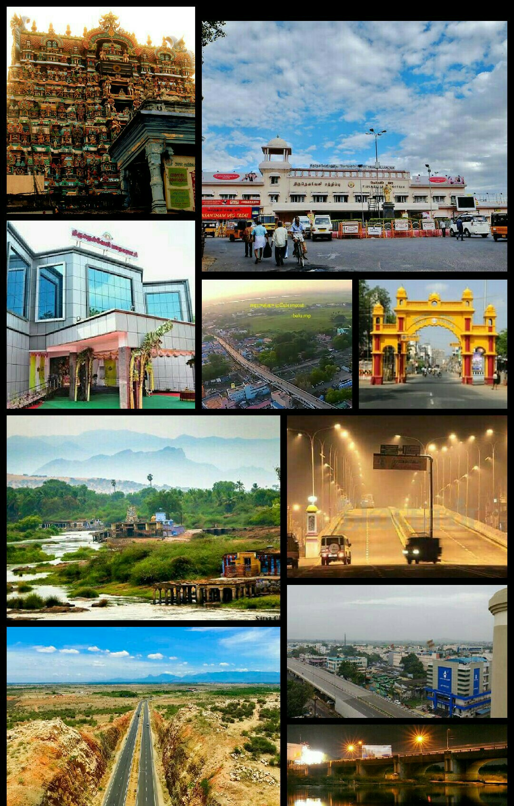
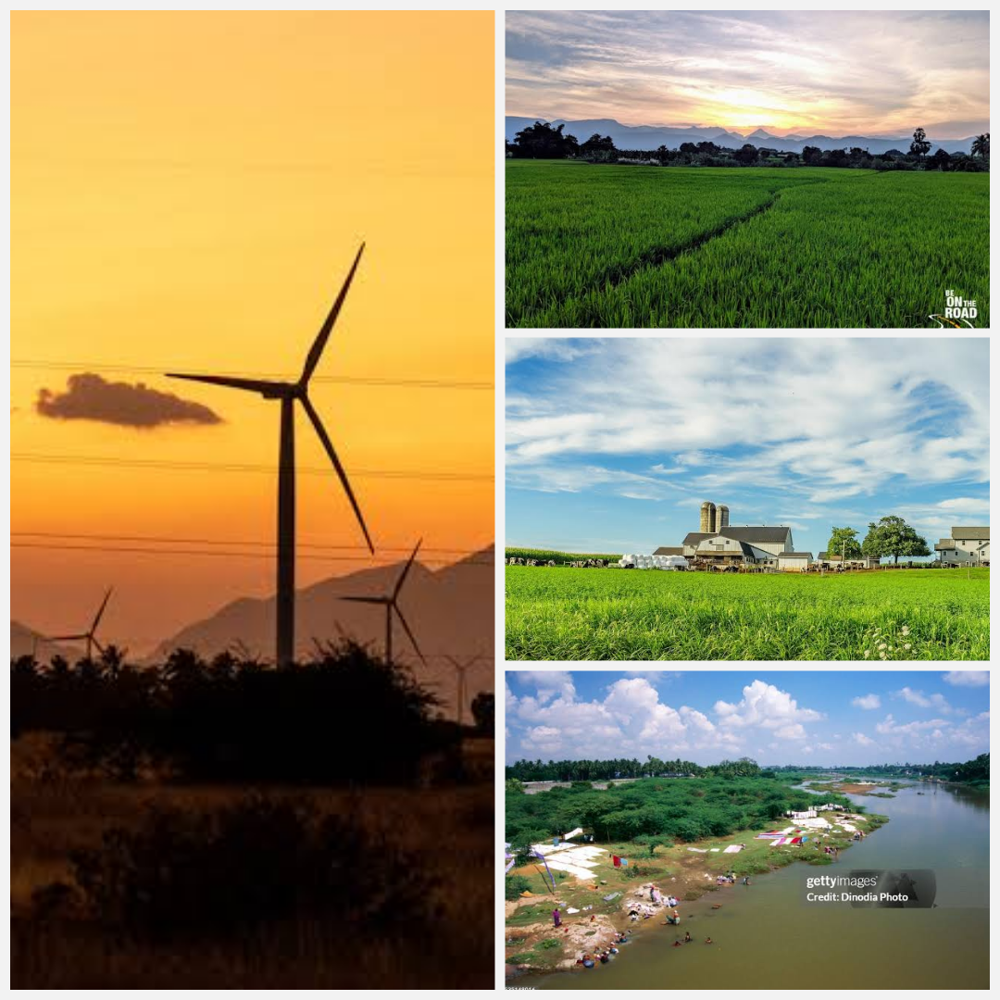
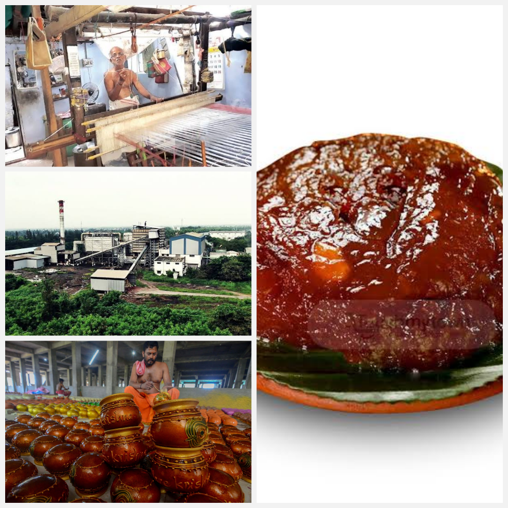
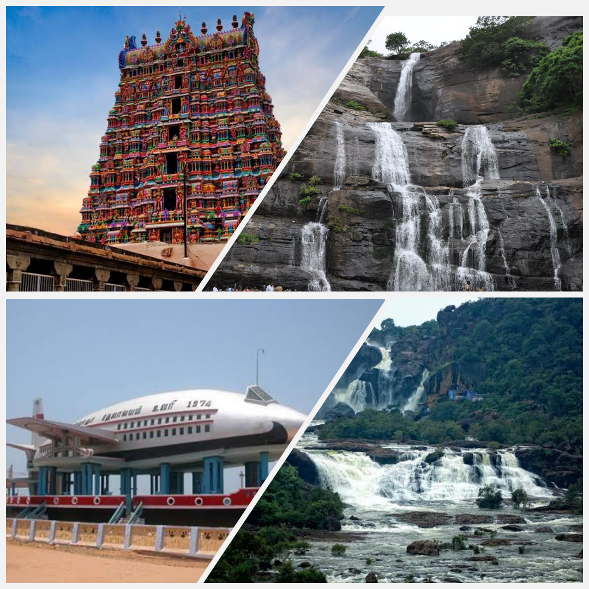

| Particulars | Description |
|---|---|
| Area | 3876.06 sq. kms |
| Population | 16,65,253 |
| Website | https://tirunelveli.nic.in/ |
History And Geography
Welcome to Tirunelveli District, the penultimate southern most district of Tamil Nadu, is described as a microcosm of the State. The district has diverse geographical and physical features such as lofty mountains and low plains, rivers and cascades, seacoast and thick inland forest, sandy soils and fertile alluvium, a variety of flora, fauna, and protected wild life.
The glory of Tirunelveli District is the pride of Tamils. The crawling clouds on the Western Ghats, the picturesque Pothigai hills and the Courtallam water falls are the special features which make Tirunelveli unique. The district consists of all the five geographical divisions referred to in Tamil literature. The Western Ghats form the Kurinji (Mountainous) region; the Kalakkadu and Mundanthurai forests form the Mullai (Forest) region; the lands watered by the Tamiraparani and other rivers fall under Marudham (Paddy fields); the Radhapuram sea coast is its Neithal land (coastal) and the teri land forms the Palai (desert) region. The district is dotted with centres of natural beauty, pilgrimage, architectural eminence and memorials to great warriors of Indian independence.
Irrigation
The District is blessed with the western ghats from which all the perennial rivers follow and drain towards the east. The surface water of the District is drained into major river basin viz Thamiraparani, Vaippar, Nambiar and Hanumanathi. Thamiraparani is the major river basin in the District. The other Streams which are seasonal in nature are Servallar, Manimuthar, Ramanathi, Pachayar, Chittar and Uppodai rivers which drain into the Tamiraparani basin. The source of irrigation are Canal, Tank and Well, which covers 133106 hectares. Among the total area irrigated, Well irrigation covers 50096 hectares, Tanks 55382 hectares and Canal 27128 hectares
Industry
There are 25 medium and major industries such as Cement, Cotton yarn, Calcium carbide, Sugar, Cotton seed oil, Printing papers and flour Mill etc. Among the other industries in the District Pin, Clip, Matches, Beedi,Vessels making and Engineering industries are important. The important Village industries functioning in the district are Handloom, Poultry farming, Brick making, Jaggary production. The Handloom products Lungi, Sarees etc are marketed in north India. So also the fine Korai mats from Pathamadi have one world fame. Kallidaikurichi Pappads, Karukurichi mud pots, also Tirunelveli “Halva” are specialities which earned many laurels to the District.
Tourism
Courtallam is situated at the Western Ghats in Tenkasi Taluk. The famous waterfalls on rocks and tiny droplets are sprinkled in the air. The water falls of Courtalam have medicinal value as they run through forest and herbs before their decent. Pappanasam Agasthiar falls also attracts tourist and pilgrims.There is a Wild life sanctuary at Mundanthurai and Kalakadu. Spotted deers, Liontailed monkeys, Elephants and Tigers are plenty.
